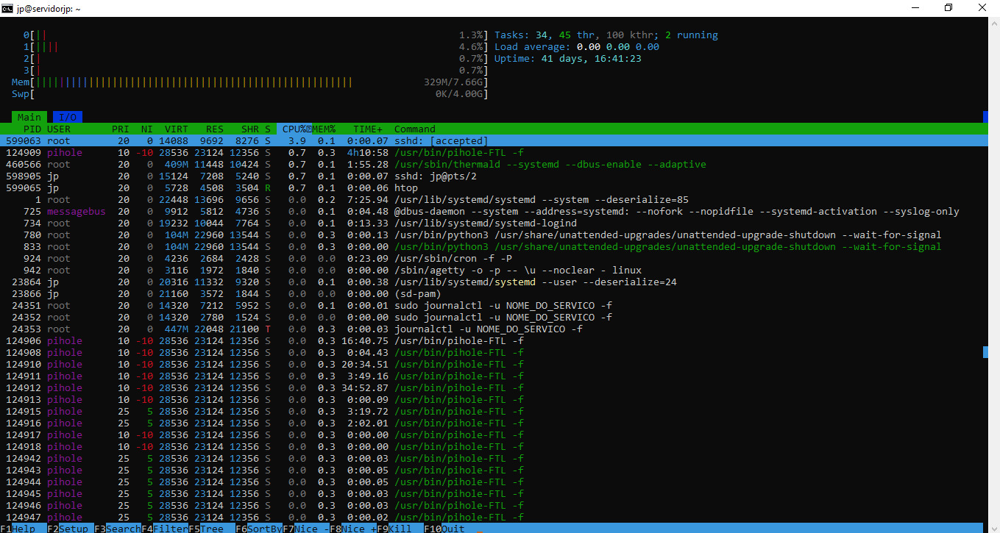
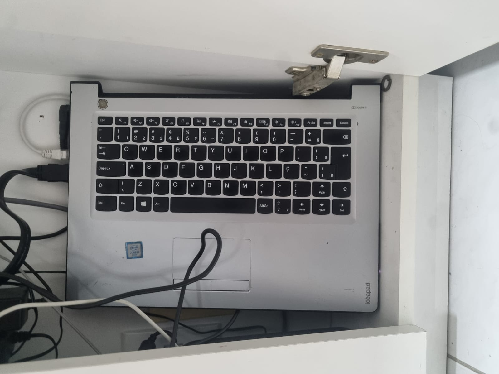

📸 Galeria




Servidor Linux administrado por mim para hospedagem de aplicações, sites e experimentos relacionados a infraestrutura.
Este servidor foi configurado para hospedar aplicações web, sites pessoais e projetos experimentais. A infraestrutura é baseada em Ubuntu Server, Nginx, SSH e gerenciamento remoto. O objetivo é aprender administração de sistemas, redes, segurança e hospedagem profissional.
Sistema operacional principal da infraestrutura.
Servidor web utilizado para publicação dos projetos.
Gerenciamento remoto seguro do servidor.
Gerenciamento de domínios e roteamento.


Publicação de aplicações e sites próprios.
Gerenciamento de usuários, permissões e serviços.
Configuração de virtual hosts e proxy reverso.
Acesso remoto seguro utilizando SSH.
Ubuntu Server
Nginx
SSH
Projetos Online
Este servidor atualmente hospeda o projeto UmSpotQualquer.